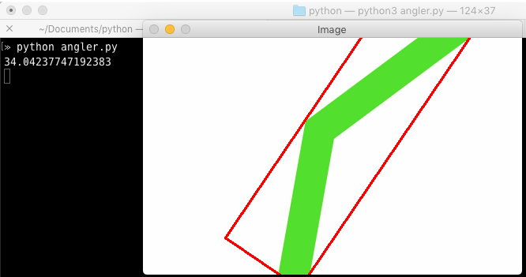
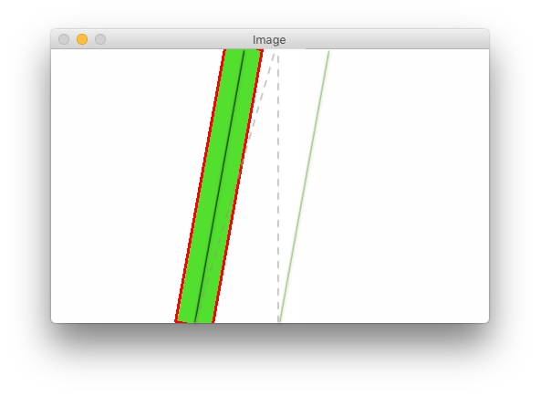

Path prediction with OpenCV
Posted on Fri 01 June 2018 in OpenCV
Recently, I spotted an article on HackerNews, Self-driving RC car that uses AI to predict turning angles. The project looked interesting. They applied AI to predict the path a radio-controlled car should take to stay centered over a tape track on the floor. Using a Raspberry Pi and PiCam mounted to the car, their algorithm performed path prediction and controlled the car's servos via the Pi's GPIO pins.
As I read the article and looked through their GitHub project, I realized that much of what they were doing with AI could probably be done nearly as effectively with OpenCV. My solution below won't cover all the functionality of the original project. But, at a basic level, here's what we'll do instead:
- Acquire an image and pre-process it.
- Isolate the tape from the background by strongly thresholding the image.
- Find the largest contour that surrounds the tape track.
- Find the minimum size bounding box around that contour.
- Finally, calculate angle of that bounding box to the Y axis
That angle is the needed turning angle to keep the car on track. From there, given the car's speed, you would want to apply some smoothing (turn somewhat less than the angle) to avoid jerky, sudden turns. (I'll note some other limitations below.)
The script is short enough that I'll just include the whole thing here. An explanation follows the code.
1 2 3 4 5 6 7 8 9 10 11 12 13 14 15 16 17 18 19 20 21 22 23 24 25 26 27 28 29 30 31 32 33 34 35 36 37 38 39 40 41 42 43 44 45 | import cv2
import imutils
import glob
import os
import numpy as np
# for demo purposes, we'll use some static JPGs
# of a green tape line
cwd = os.path.dirname(os.path.realpath(__file__))
full_path = os.path.join(cwd, 'images')
for filename in glob.glob(os.path.join(full_path, '*.jpg')):
image = cv2.imread(filename)
# https://github.com/jrosebr1/imutils has a handy resize func
resized = imutils.resize(image, width=480)
# convert to grayscale
img = cv2.cvtColor(resized, cv2.COLOR_BGR2GRAY)
# threshold fairly agressively assuming a bold tape
# color on a white background
_, thresh = cv2.threshold(img, 240, 255, cv2.THRESH_BINARY_INV)
# get the countours
_, cnts, _ = cv2.findContours(thresh,
cv2.RETR_LIST,
cv2.CHAIN_APPROX_SIMPLE)
# sort the contours
cnt = sorted(cnts, key=cv2.contourArea)
# get the min rotated bounding rect of the largest one
rect = cv2.minAreaRect(cnt[-1])
# grab the height, width, and angle of that rect
height, width = rect[1]
angle = rect[2]
# The value of OpenCV's angle depends on the rect's
# height/width ratio. https://stackoverflow.com/a/24085639/292947
if width < height:
angle += 90
# do something here with the angle to steer the car
# we'll just print it
print(angle)
# and then, for visual purposes of this article, draw
# the bounding box on and show the resized image
box = cv2.boxPoints(rect)
box = np.int0(box)
cv2.drawContours(resized, [box], 0, (0, 0, 255), 2)
cv2.imshow("Image", resized)
cv2.waitKey(0)
|
Here's a sample of what is output:

You can see the angle output to the console (34.04°) as well as the bounding box around the contour (which outlines the green tape). If you want to try yourself with the images I used, I've put them here: angler_images.zip.
Limitations
As may be obvious, there are a few limitations to this approach. First, as shown above, the algorithm wouldn't permit the car to closely follow the line. If the car turned the 34-degree angle calculated above, it would cut the corner rather than following the bend in the tape.
Perhaps less obvious is that the car could end up driving off center from the tape. Consider the following diagram:

When the car captured this image, it was offset from the tape. The vertical dashed line approximates the center of the image. The solid black line approximates the center of the green tape track, which is ideally where we want the car to drive. Instead, if the car simply turned the roughly 10 degrees calculated by our simple algorithm, it would drive next to the tape track following the solid green line.
Ideally, we'd want to calculate the offset of the tape and adjust our angle. In the simple case shown in the above diagram, simply driving straight forward for a moment or two would resolve the offset. But, if we were well off the tape track, we might even need to turn left instead of the calculated right.
More formally, we would want to adjust our calculated bounding box angle by approximately the angle formed by the tape offset and the height of the image. We'd find the tape offset (the base of our triangle) by finding the center point of the bottom of the bounding box and subtracting that from the center of the image. Then, the adjustment angle would be the arctan(tape_offset ÷ image_height).
The final limitation to consider, and something faced by the original project, is the processing speed of the Raspberry Pi. The faster you drive the car, the faster the images would need to be processed. At some point, the car will drive faster than the Pi can calculate. Your car would drive enough between frames that the tape would no longer be in the captured image.
Summary
Obviously, I haven't put this algorithm to the real test. Maybe someday I'll dig my RC-10 out of the garage and try it for real. Just the same, I still believe that OpenCV and a little trigonometry would be enough to let a toy car automatically follow a tape track.